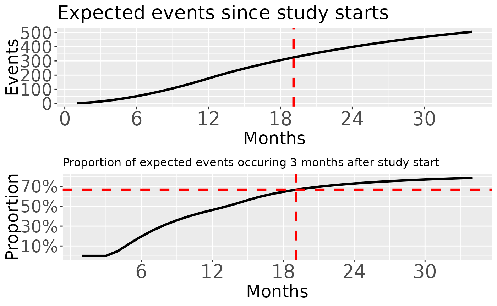

Futility bounds at design and analysis under non-proportional hazards
Keaven M. Anderson and Yujie Zhao
Source:vignettes/articles/story-nph-futility.Rmd
story-nph-futility.RmdOverview
This vignette demonstrates possible ways to set up futility bounds in clinical trial designs under the assumption of non-proportional hazards. We review the methods proposed by Wieand et al. (1994) and Korn and Freidlin (2018). To be more consistent with common practice, we propose a futility bound based on \(\beta\)-spending that automatically accounts for non-proportional hazards as assumed in the design.
We start by specifying the enrollment and failure rate assumptions, following the example used by Korn and Freidlin (2018) (based on Chen (2013)).
# Enrollment assumed to be 680 patients over 12 months with no ramp-up
enroll_rate <- define_enroll_rate(duration = 12, rate = 680 / 12)
# Failure rates
## Control exponential with median of 12 mos
## Delayed effect with HR = 1 for 3 months and HR = .693 thereafter
## Censoring rate is 0
fail_rate <- define_fail_rate(
duration = c(3, 100),
fail_rate = -log(.5) / 12,
hr = c(1, .693),
dropout_rate = 0
)
## Study duration was 34.8 in Korn & Freidlin Table 1
## We change to 34.86 here to obtain 512 expected events they presented
study_duration <- 34.86
# randomization ratio (exp:control)
ratio <- 1In this example, with 680 subjects enrolled over 12 months, we expect 512 events to occur within 34.86 months, yielding approximately 90.45% power if no interim analyses are performed.
fixedevents <- fixed_design_ahr(
alpha = 0.025, power = NULL, ratio = ratio,
enroll_rate = enroll_rate,
fail_rate = fail_rate,
study_duration = study_duration
)
fixedevents |>
summary() |>
select(-Bound) |>
lt(footnote = "Power based on 512 events") |>
lt_format(columns = 3:4, decimals = 2) |>
lt_format(columns = 5:6, decimals = 3)Beta-spending futility bound with AHR
Beta-spending allocates the Type II error rate (\(\beta\)) across interim analyses in a group sequential design. At each interim analysis, a portion of the total allowed \(\beta\) is spent to determine the futility boundary. The cumulative \(\beta\) spent up to each analysis is specified by a beta-spending function (\(\beta(t)\) with \(\beta(0) = 0\) and \(\beta(1) = \beta\)). The AHR model for the NPH alternate hypothesis accounts for the assumed early lack of benefit.
Methodology, the futility bound of IA1 (denoted as \(a_1\)) is \[ a_1 = \left\{ a_1 : \text{Pr} \left( \underbrace{Z_1 \leq a_1}_{\text{fail at IA1}} \; | \; H_1 \right) = \beta(t_1) \right\}. \] The futility bound at IA2 (denoted as \(a_2\)) is \[ a_2 = \left\{ a_2 : \text{Pr} \left( \underbrace{Z_2 \leq a_2}_{\text{fail at IA2}} \; \text{ and } \underbrace{a_1 < Z_i < b_1}_{\text{continue at IA1}} \; | \; H_1 \right) = \beta(t_2) - \beta(t_1) \right\}. \] The futility bound after IA2 can be derived in the similar logic.
In this example, the group sequential design with the \(\beta\)-spending of AHR can be derived as below.
betaspending <- gs_power_ahr(
enroll_rate = enroll_rate,
fail_rate = fail_rate,
ratio = ratio,
# 2 IAs + 1 FA
event = 512 * c(.5, .75, 1),
# efficacy bound
upper = gs_b,
upar = c(rep(Inf, 2), qnorm(.975)),
# futility bound
lower = gs_spending_bound,
lpar = list(sf = gsDesign::sfLDOF, total_spend = 0.025, param = NULL, timing = NULL),
test_lower = c(TRUE, TRUE, FALSE)
)
betaspending |>
summary() |>
lt(
title = "Group sequential design with futility only",
subtitle = "Beta-spending futility bound"
)Modified Wieand futility bound
The Wieand et al. (1994) rule recommends stopping the trial if the observed HR exceeds 1 after 50% of planned events. Korn and Freidlin (2018) extends this approach by adding a second interim analysis at 75% of planned events, also stopping if HR > 1.
Here, we implement these futility rules by setting a Z-bound at 0,
corresponding to a nominal p-value bound of approximately 0.5 at interim
analyses. Fixed bounds are specified via the gs_b()
function for both efficacy and futility boundaries.
The final efficacy bound is for a 1-sided nominal p-value of 0.025; the futility bound lowers this to 0.0247 as noted in the lower-right-hand corner of the table below. It is < 0.025 since the probability is computed with the binding assumption. This is an arbitrary convention; if the futility bound is ignored, this computation yields 0.025.
The design has 88.44% power. This closely matches the 88.4% power from Korn and Freidlin (2018) with 100,000 simulations which estimate the standard error for the power calculation to be 0.1%.
wieand <- gs_power_ahr(
enroll_rate = enroll_rate, fail_rate = fail_rate,
ratio = ratio,
# 2 IAs + 1 FA
event = 512 * c(.5, .75, 1),
# efficacy bound
upper = gs_b, upar = c(rep(Inf, 2), qnorm(.975)),
# futility bound
lower = gs_b, lpar = c(0, 0, -Inf),
)
wieand |>
summary() |>
lt(
title = "Group sequential design with futility only at interim analyses",
subtitle = "Wieand futility rule stops if HR > 1"
)Korn and Freidlin futility bound
Korn and Freidlin (2018) addressed scenarios with delayed treatment effects by modifying the futility rule proposed by Wieand et al. (1994). Their approach sets the futility bound when at least 50% of expected events have occurred, and at least two-thirds of these events happened after 3 months from randomization.
To illustrate this, we analyze the accumulation of events over time
by gsDesign2::expected_event() , distinguishing between +
events occurring during the initial 3-month no-effect period and + event
accumulation through the 34.86 months planned trial duration.
find_ia_time <- function(t) {
e_event0 <- expected_event(
enroll_rate = betaspending$enroll_rate |> mutate(rate = rate / (1 + ratio)),
fail_rate = betaspending$fail_rate |> select(stratum, fail_rate, duration, dropout_rate),
total_duration = t, simple = FALSE)
e_event1 <- expected_event(
enroll_rate = betaspending$enroll_rate |> mutate(rate = rate / (1 + ratio) * ratio),
fail_rate = betaspending$fail_rate |>
mutate(fail_rate = fail_rate * hr) |>
select(stratum, fail_rate, duration, dropout_rate),
total_duration = t, simple = FALSE)
total_event <- sum(e_event0$event) + sum(e_event1$event)
first3m_event <- sum(e_event0$event[1]) + sum(e_event1$event[1])
return(2 / 3 * total_event - (total_event - first3m_event))
}
ia1_time <- uniroot(find_ia_time, interval = c(1, 50))$root
# expected total events
e_event_overtime <- sapply(1:betaspending$analysis$time[3], function(t){
e_event0 <- expected_event(
enroll_rate = betaspending$enroll_rate |> mutate(rate = rate / (1 + ratio)),
fail_rate = betaspending$fail_rate |> select(stratum, fail_rate, duration, dropout_rate),
total_duration = t, simple = TRUE)
e_event1 <- expected_event(
enroll_rate = betaspending$enroll_rate |> mutate(rate = rate / (1 + ratio) * ratio),
fail_rate = betaspending$fail_rate |>
mutate(fail_rate = fail_rate * hr) |>
select(stratum, fail_rate, duration, dropout_rate),
total_duration = t, simple = TRUE)
sum(e_event0) + sum(e_event1)
}) |> unlist()
# visualization of expected total events
p1 <- ggplot(data = data.frame(time = 1:betaspending$analysis$time[3],
event = e_event_overtime),
aes(x = time, y = event)) +
geom_line(linewidth = 1.2) +
geom_vline(xintercept = ia1_time, linetype = "dashed",
color = "red", linewidth = 1.2) +
scale_x_continuous(breaks = c(0, 6, 12, 18, 24, 30, 36),
labels = c("0", "6", "12", "18", "24", "30", "36")) +
labs(x = "Months", y = "Events") +
ggtitle("Expected events since study starts") +
theme(axis.title.x = element_text(size = 18),
axis.title.y = element_text(size = 18),
axis.text.x = element_text(size = 20),
axis.text.y = element_text(size = 18),
plot.title = element_text(size = 20))
# expected events occur first 3 months
e_event_first3m <- sapply(1:betaspending$analysis$time[3], function(t){
expected_event(enroll_rate = betaspending$enroll_rate |> mutate(rate = rate / (1 + ratio)),
fail_rate = betaspending$fail_rate |> select(stratum, fail_rate, duration, dropout_rate),
total_duration = t, simple = FALSE)$event[1] +
expected_event(enroll_rate = betaspending$enroll_rate |> mutate(rate = rate / (1 + ratio) * ratio),
fail_rate = betaspending$fail_rate |>
mutate(fail_rate = fail_rate * hr) |>
select(stratum, fail_rate, duration, dropout_rate),
total_duration = t, simple = FALSE)$event[1]
})
# visualization of expected events occur first 3 months
p2 <- ggplot(data = data.frame(time = 1:betaspending$analysis$time[3],
prop = (e_event_overtime - e_event_first3m) / e_event_overtime * 100),
aes(x = time, y = prop)) +
geom_line(linewidth = 1.2) +
scale_x_continuous(breaks = c(6, 12, 18, 24, 30, 36),
labels = c("6", "12", "18", "24", "30", "36")) +
scale_y_continuous(breaks = c(10, 30, 50, 70, 90, 100),
labels = c("10%", "30%", "50%", "70%", "90%", "100%")) +
geom_hline(yintercept = 2/3*100, linetype = "dashed",
color = "red", linewidth = 1.2) +
geom_vline(xintercept = ia1_time, linetype = "dashed",
color = "red", linewidth = 1.2) +
labs(x = "Months",
y = "Proportion") +
ggtitle("Proportion of expected events occuring 3 months after study start") +
theme(axis.title.x = element_text(size = 18),
axis.title.y = element_text(size = 18),
axis.text.x = element_text(size = 20),
axis.text.y = element_text(size = 18),
plot.title = element_text(size = 12))
# plot p1 and p2 together
cowplot::plot_grid(p1, p2, nrow = 2,
rel_heights = c(0.5, 0.5))
As shown by the above plot, the IA1 analysis time is 19.1. With the IA1 analysis time known, we now derive the group sequential design with the futility bound by Korn and Freidlin (2018).
kf <- gs_power_ahr(
enroll_rate = enroll_rate,
fail_rate = fail_rate,
ratio = ratio,
# 2 IAs + 1 FA
event = 512 * c(.5, .75, 1),
analysis_time = c(ia1_time,
ia1_time + 0.01,
ia1_time + 0.02),
# efficacy bound
upper = gs_b,
upar = c(Inf, Inf, qnorm(.975)),
# futility bound
lower = gs_b,
lpar = c(0, 0, -Inf))
kf |>
summary() |>
lt(title = "Group sequential design with futility only",
subtitle = "Korn and Freidlin futility rule stops if HR > 1") Classical beta-spending futility bound
A classical \(\beta-\)spending bound would assume a constant treatment effect over time using the proportional hazards assumption. We use the average hazard ratio at the fixed design analysis for this purpose.
betaspending_classic <- gs_power_ahr(
enroll_rate = enroll_rate,
fail_rate = define_fail_rate(duration = Inf,
fail_rate = -log(.5) / 12,
hr = fixedevents$analysis$ahr,
dropout_rate = 0),
ratio = ratio,
# 2 IAs + 1 FA
event = 512 * c(.5, .75, 1),
# efficacy bound
upper = gs_b,
upar = c(rep(Inf, 2), qnorm(.975)),
# futility bound
lower = gs_spending_bound,
lpar = list(sf = gsDesign::sfLDOF, total_spend = 0.025, param = NULL, timing = NULL),
test_lower = c(TRUE, TRUE, FALSE)
)
betaspending_classic |>
summary() |>
lt(
title = "Group sequential design with futility only",
subtitle = "Classical beta-spending futility bound"
)Conclusion
As an alternative ad hoc methods to account for delayed effects as proposed by Wieand et al. (1994) and Korn and Freidlin (2018), we propose a method for \(\beta\)-spending that automatically accounts for delayed effects. We have shown that results compare favorably to the ad hoc methods, but control Type II error and adapt to the timing and distribution of event times at the time of interim analysis.